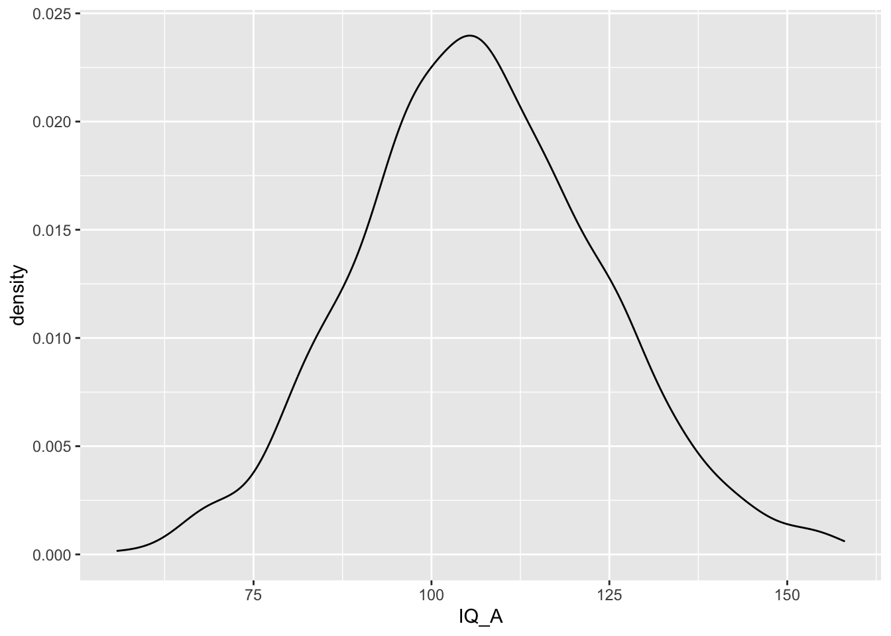
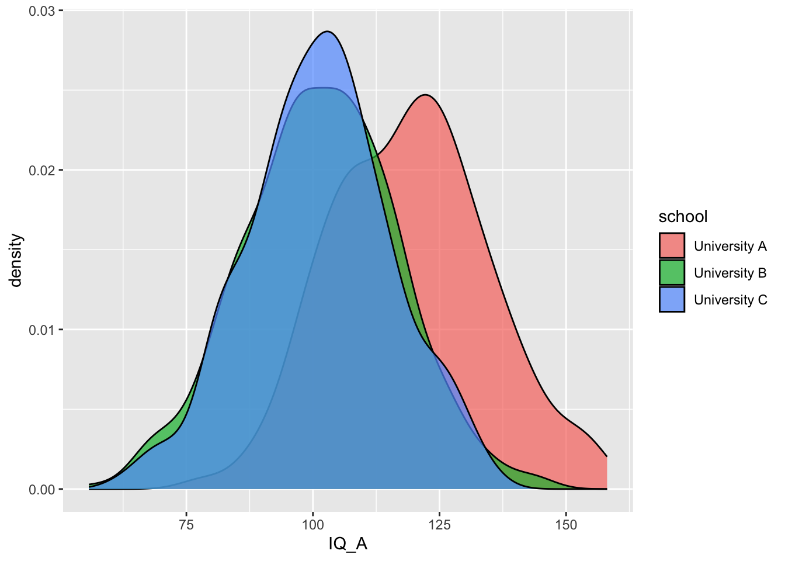
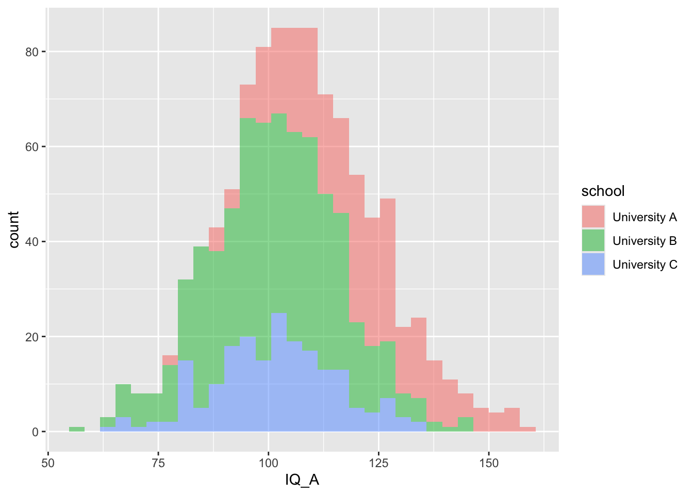
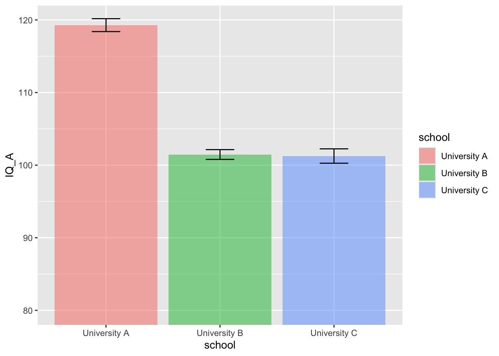
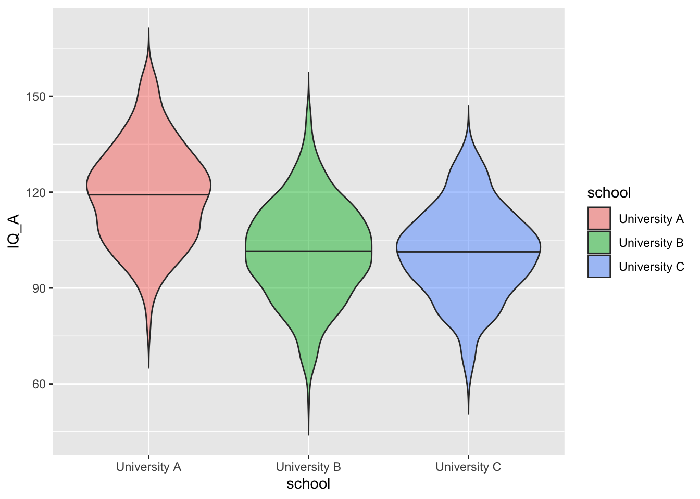

17 Visualizing Data
This chapter will give merely a superficial overview on plotting and some examples how to create graphs in R. Unfortunately, we do not have the time to have a detailed discussion of data visualizations. Data visualization will be not part of the exam.
There are excellent resources online that nicely explain how to do graphs with R and Tidyverse. For instance:
- Chapter 3 and Chapter 28 of R for Data Science
- R Graphics Cookbook
- ggplot2 documentation and ggplot2 cheat sheet
It’s often very useful find R-code of plots that are similar to a graph you want to create. You can then copy & paste the code, include your data and modify code that it suits your purposes. An overview of plots will be provided below. Websites with galleries of nice figures can be found online, for example:
Simulating example data
For the example plots in this chapter, we use a simulated dataset with scores of two IQ tests (IQ_A & IQ_B) from 1000 students. 300 students study at “University A”, 500 at “University B” and 200 at “University C”.
The following code generates the data:
# Just copy & paste, you don't have to understand the code.
simulation <- data.frame(school = c(rep("University A", 300),
rep("University B", 500),
rep("University C", 200))) %>%
mutate(school = factor(school),
# random IQ data for each person
IQ_A = rnorm(1000, 100, 15),
# make people from University A more clever
IQ_A = ifelse(school=="University A", IQ_A + 20, IQ_A),
# random different outcome of IQ test B
IQ_B = IQ_A + rnorm(1000, 0, 25) )For those how are interested in the simulation. It makes the following assumptions:
- IQ scores are normally distributed with a mean of 100 and standard deviation of 15.
- The two IQ tests are strongly correlated (see last line of code)
- Students from University A are 20 IQ points more clever than those from B & C.
17.1 Plots with base R
R has some basic plotting functions, but they’re somewhat difficult to use and aesthetically not very nice. They can be useful to have a quick look at data while you’re working on a script, though. The function plot() usually defaults to a sensible type of plot, depending on whether the arguments x and y are categorical or continuous.
17.1.1 Plot with a categorical variable
plot() with a categorical factor variable (school) shows how often the factor levels occur.
17.1.2 Plot a categorical and a continuous variable
plot() with a categorical variable x and a continuous variable y shows a box plot with the distribution of continuous data in the factor levels.
17.2 ggplot2: Plotting in Tidyverse
While the functions above are nice for quick visualisations, it’s difficult to make publication-ready plots. The package ggplot2, which is also part of the Tidyverse ), is one of the most common packages to visualise data in R.
ggplot2 creates plots using a “grammar of graphics” where you add geoms in layers. It can be complex to understand, but it’s very powerful once you have a mental model of how it works. The chapter will just illustrate the principle. Please have a look at the suggested literature above, if you want to know more.
Let’s start with a totally empty plot layer created by theggplot() function with no arguments.

Like with all Tidyverse functions, the first argument to ggplot() is the data frame you want to plot. We use our simulated data simulation.
Aesthetic mappings: The second argument is the mapping that specifies which variables corresponds to which properties of the plot, such as the x-axis, the y-axis, line colour or linetype, point shape, or object fill. These mappings are called the aesthetics and are defined in R by the aes() function. Just adding this to the ggplot() function creates the labels and ranges for the x and y axes. They usually have sensible default values, given your data, but you can also change them.
People often omit the argument name mapping and just put the aes() function directly as the second argument to ggplot. That’s also fine. You can also omit x and y as arguments inside aes(), but I suggest to use argument names if you more than one variable, because it improves the readability.
The function above does not plot anything yet and you only see scaled axes with the variable names. R does not yet know what or better how to plot the data. This will be specified in ggplot2 by “geoms” or plot styles. You literally add them with the + symbol. You can also add other plot attributes, such as labels, or change the theme and the font size (see the advanced literature).
If we add, for example, the geom_point(), we tell R to plot the data with the defined aesthetic mapping as point:
17.3 Geoms or plot types
There are many geoms, and they can take different arguments to customise their appearance. Lets have a look a common plot types. Look carefully at the code to see the different mappings, aes(), and geoms, geom_?(). This ways you get hopefully a bit of an inside how the functions work. As you know, if you want information about these functions, you can always look at the function documentation by typing ?function_name.
17.3.2 Density plots
Density plots are good for one continuous variable, but only if you have a fairly large number of observations.

You can represent subsets of a variable by assigning the category variable to the argument group, fill, or color.

17.3.3 Histogram
Histogram are useful to get an overview on the shape of the distribution of your continuous data.
## `stat_bin()` using `bins = 30`. Pick better value with `binwidth`.
If you don’t like the colours, don’t panic:
Again, you can add the factor variable the mapping (aes()) of the plot and make different histograms for each factor level.
## `stat_bin()` using `bins = 30`. Pick better value with `binwidth`.
17.3.4 Column plots
Column plots are the most common way to depict grouped continuous data. If your data are already aggregated with summarise() (see chapter 12), you can use geom_bar (and geom_col and geom_errorbar) to make this plots.
If not, you can use the function stat_summary to calculate the mean and standard error and send those numbers to the appropriate geom for plotting.
ggplot(simulation, aes(x=school, y=IQ_A, fill=school)) +
stat_summary(fun = mean, geom = "col", alpha = 0.5) +
stat_summary(fun.data = mean_se, geom = "errorbar", width = 0.25) +
coord_cartesian(ylim = c(80, 120))
17.3.5 Box plots
Boxplots are, I my view, a much better way to depict grouped continuous data, because they provide some information about the distribution and about outliers. Unfortunately, they are less common in psychology and social sciences. With ggplot2, it’s very easy to do:
17.3.6 Violin pots
Violin pots are like sideways, mirrored density plots. They give even more direct information about distribution and are, in my view, useful when you have non-normal distributions.
ggplot(simulation, aes(x=school, y=IQ_A, fill=school)) +
geom_violin(draw_quantiles = .5, trim = FALSE, alpha = 0.5)
17.3.7 Scatter plot
Let’s plot IQ_A on the x and IQ_B on the y-axes and take also the school into account: